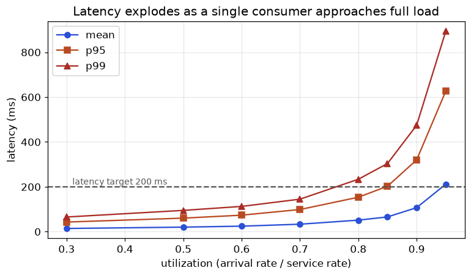

Many data teams never measure how much work a pipeline can really handle. When a pipeline is "slow", they guess. A better habit is to measure throughput, percentiles and utilization, find the bottleneck, and write a capacity recommendation, much as a hospital measures how many patients each stage (registration, doctor, pharmacy) can handle per hour. That habit is the doorway to roles such as Data Platform, ML Platform and Observability engineer. In this chapter we apply it to data pipelines: Little's law, the utilization-latency curve (with a simulation we ran), a bottleneck table for a Kafka pipeline, load-testing an ML endpoint, regression detection across builds, and cost per 1,000 predictions. Then you get eight capstone projects (the portfolio) and a bank of interview questions with model answers covering the whole document.
Honest note: Locust, k6, Kafka and cloud tools are not run here. The simulations (queue, bottleneck arithmetic, regression test) use Python's standard library and were really run (/tmp/de_lab/little.py, /tmp/de_lab2/bott.py, /tmp/de_lab2/regress.py). The queue simulation is a teaching model of a single server, not a measurement of Kafka.
L = λW). Utilization is the share of time a resource is busy, and latency rises sharply as utilization nears 100%.| Word | Plain meaning | Example |
|---|---|---|
| Arrival rate (λ, "lambda") | Requests or messages arriving per second | 50 messages/s |
| Service rate (μ, "mu") | How many one server can finish per second when busy | 100 messages/s |
| Utilization (ρ, "rho") | Fraction of time the server is busy: ρ = λ / μ | 50 / 100 = 0.5 |
| Latency (W) | Time one request spends in the system (waiting plus service) | 20 ms |
| L | Average number of requests inside the system | 1 |
| Throughput | Completed requests per second | equals λ if the system is stable |
| Percentile | The value below which a given share of observations fall | p99 = 99% are faster |
For any stable system, over a long time: L = λ × W. In words: the average number of things inside = arrival rate × average time each spends inside. It needs no assumption about the shape of arrivals. You can check it at a bank: if 2 customers arrive per minute and each spends 6 minutes inside the branch (waiting plus service), then on average 2 × 6 = 12 customers are inside.
Problem 14.1.1 An ML endpoint receives 300 requests per second and the average latency is 120 ms. How many requests are inside the endpoint on average, and how many workers do you need if each worker handles one request at a time and you want 70% utilization?
| Formula | L = λ × W; workers = L / target utilization |
|---|---|
| Plug in | L = 300 × 0.120 |
| Compute | L = 36 requests in flight. Workers = 36 / 0.70 = 51.4, round up to 52 (the real run printed concurrent requests 36.0 workers at 70% util: 52). |
| Answer | 36 requests are in flight on average, so use 52 workers for 70% utilization. |
| Check | 52 workers at 70% means 36.4 busy workers, matching L = 36. |
| Why it matters | This is how you size thread pools, connection pools and replicas from a measured latency instead of guessing. |
Problem 14.1.2 A Kafka consumer pipeline handles 2,000 messages/s and each message takes 50 ms end to end. How many messages are in flight?
| Formula | L = λ × W |
|---|---|
| Plug in | 2,000 × 0.050 |
| Compute | 100 |
| Answer | 100 messages in flight, so a consumer needs 100 parallel slots (threads or async tasks) or the work must be faster. |
| Check | If W halved to 25 ms, L halves to 50, which is why a faster sink reduces the needed parallelism. |
| Why it matters | The same law links lag, throughput and latency in streams. |
We simulate one consumer with random (exponential) arrivals and random service times with mean 10 ms (μ = 100 messages/s), and measure latency at increasing utilization. This is the model called M/M/1; little.py does it with a fixed random seed:
import random, statistics
random.seed(5)
def sim(arrival_rate, service_rate, n=200000):
t=0; free_at=0; waits=[]
for _ in range(n):
t+=random.expovariate(arrival_rate)
start=max(t,free_at); s=random.expovariate(service_rate); free_at=start+s
waits.append(free_at-t) # latency = wait + service
return waits
mu=100.0
for rho in (0.5,0.7,0.8,0.9,0.95):
w=sim(rho*mu,mu); w.sort()
mean=statistics.mean(w); p95=w[int(.95*len(w))]; p99=w[int(.99*len(w))]
print(f"{rho:.2f} {mean*1000:10.1f} {p95*1000:6.1f} {p99*1000:6.1f} {rho*mu*mean:6.2f}")
print("theory mean M/M/1: 1/(mu-lambda) ->", [round(1000/(mu-r*mu),1) for r in (0.5,0.7,0.8,0.9,0.95)])Real output:
service rate mu = 100 msg/s (1 consumer)
util mean_lat_ms p95_ms p99_ms L=lambda*W
0.50 19.9 59.8 92.7 1.00
0.70 33.9 102.4 158.0 2.37
0.80 49.3 147.4 221.1 3.95
0.90 99.4 296.7 436.1 8.95
0.95 182.4 506.1 734.9 17.33
theory mean M/M/1: 1/(mu-lambda) -> [20.0, 33.3, 50.0, 100.0, 200.0]How to read the table: each row is one load level. Between 50% and 90% utilization the load grows 1.8 times, but the mean latency grows 5 times (19.9 to 99.4 ms) and p99 grows 4.7 times (92.7 to 436.1 ms). At 95% it is nearly 10 times the 50% value. The last column checks Little's law: L computed from the simulated mean latency equals λ × W (and matches the theory value ρ/(1−ρ): 1, 2.33, 4, 9, 19). The simulated means match the theory formula 1 / (μ − λ) (20, 33.3, 50, 100, 200 ms) closely, and the small differences are random noise from a finite run.
Notice also that percentiles rise faster than the mean. The mean at 0.8 is 49 ms, and p99 is 221 ms, 4.5 times the mean. Averages hide the pain, which is why delivery companies, hospitals and data teams report p95 and p99 and not only the average.
Problem 14.1.3 The product requires p99 latency under 200 ms. Using the table, what is the highest utilization you can run the consumer at?
| Step 1 | At 0.70 the p99 is 158.0 ms (OK). At 0.80 it is 221.1 ms (too high). |
|---|---|
| Step 2 | The limit lies between 0.70 and 0.80, nearer 0.77 (linear guess). To be safe, round down to 0.7 and confirm with a finer test. |
| Answer | Run at about 70% utilization or a little above. At 100 messages/s capacity this means a sustained 70 to 75 messages/s per consumer. |
| Check | At 70%, p99 = 158 ms, which has a 42 ms margin below 200. |
| Why it matters | "Keep CPU below 70%" is not folklore: it is the result of this curve. |
Problem 14.1.4 One consumer has μ = 100/s. Peak arrival is 280/s. How many consumers (as separate workers sharing the load evenly, ignoring partition skew) keep utilization at or below 70%?
| Formula | consumers ≥ λ / (μ × target utilization) |
|---|---|
| Plug in | 280 / (100 × 0.70) |
| Compute | 280 / 70 = 4.0, so exactly 4 consumers, each at 70 messages/s (utilization 0.70). Round up and add headroom: 5. |
| Answer | 4 consumers meet the target on paper; use 5 for headroom (and make sure there are at least 5 partitions). |
| Check | 5 × 100 = 500/s capacity vs. 280/s: utilization 0.56, p99 between 92.7 ms (0.5) and 158 ms (0.7). |
| Why it matters | Real traffic is not evenly split because of key skew (Chapter 11), so test per-partition behaviour. |
Check yourself
| Web test | Data pipeline test |
|---|---|
| Simulated visitors, pause between clicks | Message rate (events/s), batch size, data volume |
| Response time per request | End-to-end latency (produced to visible), consumer lag, run duration |
| Errors (HTTP 5xx) | Failed records, duplicates, lost records (reconcile counts), DLQ size |
| Session tokens and ids | Generate realistic keys (so partitions are balanced or skewed like production) |
| Gradual ramp, steady, spike, soak | Same four shapes: ramp, steady, spike (10 times for 30 minutes), soak (hours, watching memory and lag) |
| Result: percentile table | Result: throughput per stage, lag over time, utilization per stage, cost per 1,000 events |
Tools (examples only): Locust (Python, easy for custom producers), k6, Gatling, or a short Python producer; for Kafka specifically, the producer performance script shipped with Kafka and tools like kcat. For batch pipelines: run with a synthetic dataset of known size (Faker or your own generator) and compare 1x, 5x, 10x volumes to see if runtime grows linearly. (Check each tool's current options in its docs; not run here.)
Stage capacities measured in a test, in messages per second: producer 8,000; Kafka broker 50,000; consumer (4 threads at 1,200 each) 4,800; transform 6,000; warehouse sink 3,500.
stages={"producer":8000,"kafka_broker":50000,"consumer(4 threads x 1200)":4*1200,"transform":6000,"warehouse_sink":3500}
b=min(stages,key=stages.get); print("bottleneck:",b,stages[b])
arr=4000
print("arrival",arr,"util at bottleneck",round(arr/stages[b],2))bottleneck: warehouse_sink 3500
arrival 4000 util at bottleneck 1.14The slowest stage, the warehouse sink at 3,500/s, limits the whole pipeline (throughput of a chain = minimum stage capacity). With arrival 4,000/s, utilization at the bottleneck is 4,000 / 3,500 = 1.14, above 1, so lag grows by 500 messages per second (1.8 million per hour) forever. The consumer and Kafka look fine, which is the trap: the problem hides in the last box.
Problem 14.2.1 Using the stage list, what is the system throughput after you double the sink capacity to 7,000/s by batching writes? What is the new bottleneck, and its utilization at 4,000/s?
| Step 1 | New capacities: producer 8,000; broker 50,000; consumer 4,800; transform 6,000; sink 7,000. |
|---|---|
| Step 2 | The minimum is now the consumer at 4,800. Utilization at 4,000/s = 4,000 / 4,800 = 0.83. |
| Answer | System capacity becomes 4,800/s, the consumer is the new bottleneck, at 83% utilization for a 4,000/s load. This is above the 70% comfort level and p99 would suffer (see 14.1), so add consumers: 6 threads give 7,200/s and utilization 0.56 (needs 6 or more partitions). |
| Check | 4,000 / 7,200 = 0.556. And transform is next at 6,000, so after that fix the system caps at 6,000. |
| Why it matters | Fixing a bottleneck reveals the next one. Report them as a ladder of improvements, each with a measured number. |
Problem 14.2.2 Backlog and recovery. Arrival is 5,000 messages/s and one consumer does 1,200/s. How many consumers keep up, and with 6 consumers how long to drain a backlog of 1.8 million?
| Formula | consumers = ⌈arrival / per-consumer rate⌉; drain time = backlog / (capacity − arrival) |
|---|---|
| Plug in | ⌈5,000 / 1,200⌉ = ⌈4.17⌉ = 5. With 6: capacity 7,200, spare 2,200/s. |
| Compute | 1,800,000 / 2,200 = 818 s = 13.6 minutes (the run printed 13.6). |
| Answer | At least 5 consumers to keep up (zero spare, so no recovery), and 6 consumers drain the backlog in about 13.6 minutes. |
| Check | 2,200 × 818 = 1,799,600, about 1.8 million. Yes. |
| Why it matters | "How fast do we recover?" is a question you can answer with a formula. |
Same method, with a few extra measurements: latency percentiles per batch size, throughput, GPU utilization and memory (if used), cold start time, and error rate under overload. Compare a replica count and compute cost.
node=0.9; rps_node=150 # illustrative price per hour, measured requests per second per node
print("cost per 1k predictions $",round(node/(rps_node*3600)*1000,5))cost per 1k predictions $ 0.00167Calculation: one node per hour costs 0.90 (a made-up price) and serves 150 × 3,600 = 540,000 predictions per hour, so 1,000 predictions cost 0.90 / 540 = 0.00167. If utilization is only 35% in real traffic, the real cost is about 1/0.35 = 2.9 times higher: idle capacity is the biggest hidden cost. Techniques to improve: dynamic batching of requests, a quantized or smaller model, autoscaling on queue length (not CPU only), and caching repeated inputs.
Problem 14.2.3 A node (illustrative 1.20 per hour) serves 200 requests/s at p99 under the SLO. Traffic averages 120/s but peaks at 600/s for 2 hours a day. What do you run, and what is the daily cost if you autoscale versus run for the peak all day?
| Formula | nodes = ⌈rate / node capacity⌉; cost = nodes × price × hours |
|---|---|
| Plug in | Peak: ⌈600 / 200⌉ = 3 nodes. Off-peak: ⌈120 / 200⌉ = 1 node (use 2 for resilience). |
| Compute | Fixed for peak (3 nodes, 24 h): 3 × 1.20 × 24 = 86.40. Autoscaled (3 nodes for 2 h and 2 nodes for 22 h): 3 × 1.20 × 2 = 7.20; 2 × 1.20 × 22 = 52.80; total 60.00. |
| Answer | 86.40 versus 60.00 per day (a 30.6% saving, 26.40 saved: 26.40 / 86.40 = 0.3056). |
| Check | 7.20 + 52.80 = 60.00. And 86.40 − 60.00 = 26.40. Yes. |
| Why it matters | Autoscaling has a delay (new nodes need minutes), so pre-scale before known peaks or keep a buffer. |
A portfolio idea: store every measured run in a table, fact_pipeline_run(run_id, scenario, p50, p95, p99, throughput, error_rate), and compare runs over time. A simple regression detector asks: is the latest release slower than the history, or is that noise? We simulate: 30 earlier runs with p95 around 250 ms (standard deviation about 12), and 6 recent runs around 280.
import random, statistics as st
random.seed(11)
base=[random.gauss(250,12) for _ in range(30)]
new=[random.gauss(280,12) for _ in range(6)]
print("baseline mean %.1f sd %.1f"%(st.mean(base),st.stdev(base)),"| new mean %.1f"%st.mean(new))
diff=st.mean(new)-st.mean(base)
cnt=0; N=10000
for _ in range(N):
s=[random.choice(base) for _ in range(6)] # bootstrap: 6 runs drawn from history
if st.mean(s)-st.mean(base)>=diff: cnt+=1
print("observed diff %.1f ms; bootstrap p = %.4f"%(diff,cnt/N))baseline mean 250.8 sd 11.7 | new mean 272.7
observed diff 21.9 ms; bootstrap p = 0.0000Read it: if the history were the whole truth, how often would 6 random runs average 21.9 ms or more above the baseline mean? In 10,000 trials, never (p below 0.0001). So the slowdown is real, not noise, and the release should be investigated. The idea (bootstrap: resample your own data to see how surprising a result is) needs no formulas. For slow drifts use a change-point method or a forecast; and for many scenarios control the false alarms.
Test the failure paths on purpose in a test environment: kill a consumer mid-batch (do duplicates appear? Chapter 11), delay the source, send a bad schema, fill the disk, restart the scheduler (Chapter 6), run a 10x backfill and watch the source database. Check the pipeline's promises: no data loss, no duplicates in the final table, freshness restored within the SLA. Results go into the runbook (Chapter 12).
Check yourself
Each project is a portfolio piece. Do them in this order; each one gives material for interview answers. For every project write a README with the problem, architecture diagram, how to run, results with real numbers, and what you would change. Use free tools (Docker, PostgreSQL, DuckDB, Airflow, Kafka in Docker, Spark local, dbt with DuckDB).
| # | Project | Skills from this document | Deliverable and proof |
|---|---|---|---|
| 1 | API to Airflow to PostgreSQL pipeline in Docker with tests and alerts | Chapters 4, 5, 6, 12 | Docker Compose, idempotent DAG, pytest, a failure alert; screenshot of a backfill |
| 2 | dbt project: staging to marts, tests, docs, CI | Chapters 2, 5, 7, 12 | star schema on DuckDB, 15 or more tests, GitHub Actions run, generated docs |
| 3 | End-to-end cloud pipeline (ingest, lake, warehouse, dashboard) deployed with Terraform | Chapters 3, 8, 12 | Terraform files, plan output, architecture diagram, cost estimate |
| 4 | PySpark job on 10 million or more rows with documented tuning | Chapters 9, 10 | before and after runtimes, Spark UI screenshots, skew fix explained |
| 5 | Kafka plus Debezium CDC into a lakehouse table | Chapters 4, 11, 13 | MERGE applied, duplicates and deletes proven, slot lag alert |
| 6 | Streaming pipeline (Structured Streaming or Flink) with a live dashboard | Chapter 11 | windows, watermark, late-data test with numbers |
| 7 | Data quality framework with automated checks and alerts | Chapters 5, 12 | checks, quarantine table, freshness and volume monitors |
| 8 | Performance and capacity report of a data pipeline | Chapter 14 and all | Locust or Python-producer test plan, results table, bottleneck ladder, cost model, recommendations |
Title: "Load test and capacity plan for a Kafka-to-warehouse pipeline."
Problem 14.3.1 You have a result table with three runs: "baseline" 3,500 events/s sink-bound, "batched sink" 4,800/s consumer-bound, "6 consumers" 6,000/s transform-bound. Write the one-line result for your README.
| Formula | improvement % = (new − old) / old × 100 |
|---|---|
| Plug in | (6,000 − 3,500) / 3,500 × 100 |
| Compute | 2,500 / 3,500 = 0.714, so 71.4% |
| Answer | "Throughput improved 71% (3,500 to 6,000 events/s) by batching sink writes and scaling consumers from 4 to 6; the new bottleneck is the transform stage at 6,000/s." |
| Check | 3,500 × 1.714 = 6,000. Yes. |
| Why it matters | A quantified one-liner with the next bottleneck named shows analysis, not just activity. |
Problem 14.3.2 Turn this into a resume bullet: you tested the capacity of a Kafka pipeline and removed a sink bottleneck.
| Step 1 | Use the pattern: action, scale, result, method. |
|---|---|
| Step 2 | Draft it. |
| Answer | "Load-tested a Kafka to warehouse pipeline (5,000 events/s, Locust and Python producers), found the warehouse sink as bottleneck at 3,500/s, and raised capacity 71% by batching writes and adding consumers; documented a 3x growth capacity plan and cost per 1,000 events." (Use only numbers you actually measured.) |
| Check | It has a verb, a scale, a method, a measured result and an artifact. |
| Why it matters | ATS and recruiters scan for numbers. |
Fewer, finished, well-documented projects beat many half-finished ones. Responsible use: use synthetic or public data, never real customer data or company secrets in a public repository.
Check yourself
Answer aloud first, then compare. Model answers are short on purpose; add an example from your own work. They cover the whole document. Chapter numbers show where to review.
valid_to) and inserting a new row with a new surrogate key and valid_from; facts join to the version valid at event time. (Ch 2)updated_at? It reads the database log, so it sees deletes, does not load the database, and keeps order; it needs a snapshot first and monitoring of the replication slot. (Ch 4, 13)now(). (Ch 4, 6)now() so backfills work. (Ch 6)catchup do? Creates runs for every missed interval since the start date; set it explicitly together with max_active_runs. (Ch 6)ref to build a dependency graph, materializations (view, table, incremental), tests, docs and CI; it is the "T" in ELT. (Ch 7)repartition versus coalesce? repartition does a full shuffle to any count, balancing data; coalesce only reduces partitions without a shuffle and can leave them uneven. (Ch 10)Problem 14.4.1 An interviewer asks: "Your daily Spark job's runtime grew from 20 to 55 minutes over three months while data grew 30%. Why?" Give a structured answer.
| Step 1 | Data grew 1.3 times but time grew 55 / 20 = 2.75 times, so the growth is not linear; suspect skew, small files, a join that now shuffles more, a spill to disk, or a source or sink slowdown. |
|---|---|
| Step 2 | Plan: compare Spark UI stage times between an old and a new run; look for one long task (skew), shuffle spill, and file counts per partition; check the cluster configuration changes and the sink. |
| Answer | "Time grew 2.75 times for 1.3 times the data, so something scales worse than linearly. I would diff the Spark UI of an old and a new run: skewed tasks, shuffle spill, small files, and I would test fixes one at a time (broadcast, salting, compaction, more partitions) and measure each." |
| Check | The answer states the numbers, gives a hypothesis list and a measurement plan. |
| Why it matters | The interviewer wants a method, not a lucky guess. |
Section 14.1 gave you Little's law and a table of the utilization-latency curve. Here is the picture of that curve, then two more capacity questions you will be asked in design reviews: "should I run one big consumer or many small ones?" and "how long will the lag last after a traffic burst?".

How to read it: the x-axis is how busy the consumer is. Up to about 0.7 the three lines rise gently. After 0.8 they bend upwards, and p99 crosses the 200 ms target a little above 0.75. The gap between the lines also widens: when you are close to full, the unlucky messages wait far longer than the average. The practical rule is to plan for 60 to 70% utilization at peak, not 95%.
The total capacity is 100 messages per second in each setup, and the load is 80 per second (80% utilization). Setup A is one worker doing 100 per second. B is two workers doing 50 each, C is four doing 25 each. Predict: is the average latency the same, since total capacity is the same?
# One fast server versus two servers each half as fast, same total capacity, same load.
import random, statistics
def sim(lam, mu_each, servers, n=100000, seed=11):
random.seed(seed)
t = 0.0; free = [0.0] * servers; lat = []
for _ in range(n):
t += random.expovariate(lam)
i = free.index(min(free)); start = max(t, free[i])
free[i] = start + random.expovariate(mu_each)
lat.append(free[i] - t)
lat.sort()
return statistics.mean(lat) * 1000, lat[int(0.99 * n)] * 1000
lam = 80.0 # messages per second, total capacity 100 per second in both setups
m1, p1 = sim(lam, 100.0, 1)
m2, p2 = sim(lam, 50.0, 2)
m4, p4 = sim(lam, 25.0, 4)
print("1 server at 100/s : mean %6.1f ms p99 %6.1f ms" % (m1, p1))
print("2 servers at 50/s each: mean %6.1f ms p99 %6.1f ms" % (m2, p2))
print("4 servers at 25/s each: mean %6.1f ms p99 %6.1f ms" % (m4, p4))1 server at 100/s : mean 50.2 ms p99 227.1 ms
2 servers at 50/s each: mean 55.9 ms p99 237.8 ms
4 servers at 25/s each: mean 70.3 ms p99 276.0 ms| Step 1 | One fast worker: mean 50 ms (theory 1 / (100 - 80) = 50 ms), p99 227 ms. |
|---|---|
| Step 2 | Splitting the same capacity into 2 workers makes each message slower to process (mean service time 20 ms instead of 10 ms), so the mean goes to 56 ms and p99 to 238 ms. Four workers: 70 ms and 276 ms. |
| Step 3 | The splitting does help in one way our table does not show: a long message blocks only one of several workers instead of the only one, and if one worker dies you lose half or a quarter of capacity, not all of it. |
| Answer | Not the same. At equal total capacity, fewer faster workers give lower latency, but many workers give better failure tolerance and scale out. In practice you cannot buy an infinitely fast worker, so you choose the smallest number of workers that meets the latency target with room for one failure. |
A consumer group handles 100 messages per second. A flash sale sends 150 per second for 60 seconds, then traffic returns to 60 per second. Predict the peak lag and when it clears. The simulation steps second by second: lag = max(0, lag + arrivals - capacity).
# A burst: input is 150 msg/s for 60 s on a consumer group that handles 100 msg/s, then back to 60 msg/s.
cap = 100
lag, peak, t_clear = 0, 0, None
for sec in range(0, 600):
arrive = 150 if sec < 60 else 60
lag = max(0, lag + arrive - cap)
peak = max(peak, lag)
if sec >= 60 and lag == 0 and t_clear is None: t_clear = sec
print("peak lag:", peak, "messages")
print("lag cleared at second:", t_clear)
print("catch-up rate after the burst:", cap - 60, "msg/s")
print("peak lag in seconds of work:", peak / cap, "s")peak lag: 3000 messages
lag cleared at second: 134
catch-up rate after the burst: 40 msg/s
peak lag in seconds of work: 30.0 s| During burst | Each second adds 150 - 100 = 50 messages of lag. After 60 seconds: 3,000 messages. |
|---|---|
| After burst | Arrivals are 60, capacity 100, so lag falls by 40 per second. 3,000 / 40 = 75 seconds to clear, which is second 134 on the clock. |
| Delay seen by users | 3,000 messages at 100 per second is 30 seconds of work: the last message of the burst waits 30 seconds. |
| Answer | Peak lag 3,000, cleared 75 seconds after the burst ends. |
| Insight | Recovery speed is the spare capacity (100 - 60 = 40). A consumer at 95% utilization has 5% spare and takes 20 times longer to recover than one at 60%. This is the real reason to keep headroom. |
Problem 14.5.1 Kafka topic input is 12,000 messages per second at peak. One consumer thread handles 1,500 per second at 100% busy. You want 65% utilization at peak and N+1 spare. How many threads? How many partitions at minimum?
| Step 1 | Usable rate per thread: 1,500 x 0.65 = 975 per second. |
|---|---|
| Step 2 | Threads: 12,000 / 975 = 12.3, round up to 13. |
| Step 3 | N+1: 14 threads. |
| Step 4 | A partition is read by at most one consumer in a group, so you need at least 14 partitions. Choose 16 or more to leave room to scale (partition count is hard to reduce later). |
| Check | 14 x 975 = 13,650 per second at 65%, and with one thread dead 13 x 975 = 12,675, still above 12,000. |
Problem 14.5.2 Consumer capacity 200 per second. A burst of 500 per second lasts 20 seconds, then arrivals drop to 120. How long after the burst until lag is zero?
| Step 1 | During burst: lag grows by 500 - 200 = 300 per second, so 6,000 after 20 s. |
|---|---|
| Step 2 | After: spare = 200 - 120 = 80 per second. 6,000 / 80 = 75 s. |
| Answer | 75 seconds after the burst, peak lag 6,000 messages. |
Practice (with answers)
L = λ × W connects rate, latency and the number in flight; it sizes pools, replicas and consumers.ρ = λ / μ: latency stays flat and then rises steeply near 100%; our simulation gave p99 of 92.7 ms at 50% and 436.1 ms at 90%. Keep sustained utilization near 70%.| Item | Formula |
|---|---|
| Little's law | L = λ × W |
| Utilization | ρ = λ / μ |
| M/M/1 mean latency | 1 / (μ − λ) |
| Servers needed | ⌈λ / (μ × target ρ)⌉ |
| Chain throughput | min(stage capacities) |
| Drain time | backlog / (capacity − arrival) |
| Cost per 1k predictions | node price per hour / (rps × 3600) × 1000 |
| Improvement % | (new − old) / old × 100 |
1. (easy) 500 requests/s with 80 ms latency. How many requests in flight?
Answer: 500 × 0.080 = 40.
2. (easy) A server finishes 200 requests/s at most and receives 150/s. Utilization?
Answer: 150 / 200 = 0.75.
3. (easy) Stage capacities 900, 1,500, 600, 2,000 per second. System throughput and bottleneck?
Answer: 600 per second; the third stage.
4. (medium) Mean latency is 20 ms at 50% utilization and 99.4 ms at 90%. How many times higher is it?
Answer: 99.4 / 19.9 (the table values) = 5.0 times, while the load rose 1.8 times (0.9 / 0.5).
5. (medium) A consumer handles 800 messages/s. Peak arrival is 3,000/s. Target utilization 70%. Consumers needed?
Answer: 3,000 / (800 × 0.70) = 3,000 / 560 = 5.36, so 6 consumers (and at least 6 partitions).
6. (medium, what is the output?) min({"a":50,"b":30,"c":80}, key=lambda k: {"a":50,"b":30,"c":80}[k])
Answer: "b": the key with the smallest capacity (30). This is the bottleneck finder used in 14.2.
7. (medium) A backlog of 600,000 messages, capacity 2,500/s, arrival 1,900/s. Drain time?
Answer: Spare 600/s; 600,000 / 600 = 1,000 s = 16.7 minutes.
8. (medium, find the bug) A test report says: "average latency 120 ms, so we pass the SLO of p99 under 300 ms." What is wrong?
Answer: The mean does not say anything about p99. In queueing systems p99 can be 4 to 5 times the mean (in our run 4.5 times at 80% utilization), so p99 could be around 540 ms. Report the p99 itself.
9. (hard) An endpoint costs 2.40 per hour per node (illustrative) and handles 300 requests/s at full load. Average real load is 30% of that. Cost per 1,000 predictions at full load and at the real load?
Answer: Full load: 2.40 / (300 × 3,600) × 1,000 = 2.40 / 1,080 = 0.00222. At 30% load the node serves 90/s: 2.40 / (90 × 3,600) × 1,000 = 2.40 / 324 = 0.00741. That is 3.33 times higher (1 / 0.3).
10. (interview) Your Kafka consumer's lag is stable at 0 during the day but climbs to 2 million every evening for an hour. What do you do?
Answer: The evening peak exceeds capacity. Measure peak arrival and per-consumer rate, compute consumers needed at 70% utilization, check partitions (raise if needed before the evening), look for a slow sink or hot key at that hour, add scheduled autoscaling before the peak, and verify drain time with a spike test. Lag that returns to zero means the system is stable overall; the question is whether the delay is acceptable for the business.
11. (interview) Describe your best performance finding and how it applies to data engineering.
Answer: (Model structure) Situation: a release with a slow response at peak. Action: found a connection pool exhausted using Little's law (arrival rate times latency exceeded the pool size), measured, fixed, and retested. Result: a number, such as p99 from 2.1 s to 600 ms. Link: the same method sizes consumer groups, warehouse concurrency and ML replicas.
You are my patient, practical professor. I am a working professional moving into data roles, and English is my second language. Teach me Little's law and the utilization-latency curve using a Kafka consumer as the example. Use real numbers, explain why latency rises sharply near 100% utilization, and why p99 is bigger than the mean. Then give me 8 graded numeric exercises without solutions.
You are my patient, practical professor. I am a working professional moving into data roles, and I am learning data engineering. Topic: load testing a data pipeline and a Kafka consumer. Help me write a test plan with SLO, workload model (rate, message size, key distribution), ramp, steady, spike, soak and chaos tests, the metrics to record per stage, and how to prove no data loss. Ask me clarifying questions first. My pipeline description: [PASTE HERE]
You are my patient, practical professor. I am a working professional moving into data roles. Teach me to load test an ML inference endpoint: latency percentiles, batch size, cold start, GPU utilization, autoscaling, and cost per 1,000 predictions. Give me a case with numbers, let me compute replicas and daily cost with and without autoscaling, and check my arithmetic. My answers: [PASTE HERE]
You are my patient, practical professor. I am a working professional moving into data roles, and I am planning a data engineering portfolio. Review my capstone project idea against this structure: problem, architecture, how to run, measured results, bottleneck table, cost model, what I would change. Suggest the 3 changes that would impress a hiring manager most, and rewrite my resume bullet with measured numbers. My project: [PASTE HERE]
You are my patient, practical professor. I am a working professional moving into data roles, and I am applying for data engineer roles in India. Run a mock interview covering the whole data engineering document: modeling, file formats, ingestion and CDC, quality, Airflow, dbt, Spark tuning, Kafka and streaming, infrastructure, governance, system design and performance. Ask 10 questions one at a time, mixing easy and hard. After each answer give a score from 1 to 5, a model answer in simple English, and one follow-up. My answers: [PASTE HERE]